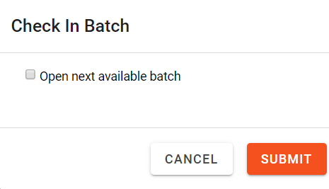

Checking in a batch is available through the Review Grid layout. When entering the review pass for the first time, the Document Viewer window automatically opens in the foreground and displays the first document in the batch. The review grid remains in the background. The grid displays a highlight for the corresponding document shown in the Document Viewer window.
Proceed to review the documents in the batch. When ready, select the Check In button above the review grid. Once the batch is checked in, the next available batch will open in the same review pass by default.
To check in a reviewed batch, complete the following steps:
From the review grid, click to display the Check In Batch dialog box as shown here:
